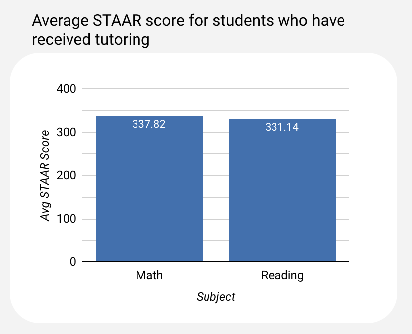

Last Updated: 2022-07-28
This Codelab is designed to introduce you to Google Data Studio, providing background on the various components that make up the product as well as embedded activities that help you get hands on with it.
Data Studio was released in May of 2016 originally as a free, data visualization product focused on helping people gain insight into their marketing data. However, as it goes in K12 education, if an educator finds a tool that can help them with their work, you bet it's going to spread like wildfire. Very quickly, teachers started connecting their various Google Sheets to Data Studio to visualize the various student trackers and assessment data files they had in their Google Drive.
Over time Google started building out Data Studio to support the needs of educators and data folks in schools. Features such as conditional formatting and filtering data by email were built based on direct feedback from people in schools.
Today Data Studio remains a powerful tool to turn data into insights. This Codelab will help you get comfortable navigating the product. Let's get to it!

Hi. I am Marcos Alcozer and I am the author of this Codelab. I am a K12 analytics engineer and solution architect for the Ed-Fi Alliance.
I help folks in districts become analytics engineers so they can build data dashboards and reports that provide insights back to school leaders and educators. I also maintain open source code that deploys a full analytics data stack in Google Cloud so no one has to start at square one. Below is a diagram of that infrastructure. You'll notice Data Studio on the right. I have been working in it since 2016 and see it as the ideal data visualization tool for data folks in K12.
Data Studio is a free data visualization product from Google that turns data into informative, easy to read, easy to share, and fully customizable dashboards and reports. Straight from Google's documentation, here are a few key features of Data Studio:
- Visualize your data through highly configurable charts and tables.
- Easily connect to a variety of data sources.
- Share your insights with your team or with the world.
- Collaborate on reports with your team.
- Speed up your report creation process with built-in sample reports.
Data Studio makes it easy to combine, transform, and visualize the data you likely already have in Google Sheets. When you're ready to share, Data Studio uses the same sharing process as a Google Doc.
Before we talk about building a report, let's start with data sources. Data sources are what sit between the actual data (think Google Sheet or table in BigQuery) and the chart in a Data Studio report. A data source can be created by going to datastudio.google.com and clicking Create → Data Source, but is more often created as the first step when creating a new report.
Data sources use connectors to fetch data from a specific program. In this Codelab we will be using the Google Sheets connector. There are over 20 Google provided connectors as well as 600 community connectors.
Modeling your data
After connecting a Google Sheet or database table to a data source, you will see an interface similar to the one below. This is your place to model your data before using it in a report. It's important to always review this page before starting to build in Data Studio. Often, odd behavior seen in Data Studio can be traced back to an issue with how the data was modeled in the data source.
Field names, data types, and default aggregation
It's recommended that field names be set in your Google Sheet, BigQuery table, or other program, but that is not always possible. Sometimes you're working with a Sheet that has a column name you don't control. Perhaps you're given a Sheet with a column name SName and you don't have permission to rename it to Student First Name in the Sheet itself. Your data source allows you to rename the field. To change the name, click the field and type a new one.
A field's data type tells Data Studio what kind of data to expect when processing the field. Data type determines how the data appears in your reports, which operations are allowed on it, and which are not. For example, you can't apply an arithmetic function to a Text field, or use a Number field as the date range dimension in a report. Use the drop-down menu to change a field's data type.
Aggregation is the method by which a field's data is summarized. A field's default aggregation method in the data source is applied when you use that field as a metric in a chart. If you use the field as a dimension, then you'll group the chart by that field. This can also be changed at the chart level.
Dimensions and metrics
Throughout Data Studio, when creating and configuring charts you will see data referred to as dimensions and metrics. It is important to understand the difference to ensure a specific field is used properly.
Let's imagine are using the dataset below. This is a student attendance dataset that is related to daily attendance. It is one row per student per date enrolled and provides the attendance mark a student received for each date as well as an absence event duration.
Student Name | Date | Attendance Mark | Absence Event Duration |
Hermione Granger | 2023-09-12 | P | 0 |
Hermione Granger | 2023-09-13 | EA | 1 |
Hermione Granger | 2023-09-14 | P | 0 |
Ron Weasley | 2023-09-12 | UA | 1 |
Ron Weasley | 2023-09-13 | UA | 1 |
Dimensions describe or categorize your data. Dimensions contain unaggregated data. Dimensions appear as green fields in the data source editor and report properties panel. All of the fields above will show in Data Studio as a dimension. Student Name is a clear example of a dimension. This is a field that is describing the student.
Metrics measure your dimensions. Metrics contain aggregated data. Metrics appear as blue fields in the data source editor and report properties panel.
Calculated fields are fields you create by applying functions, operators, and/or branching logic to your data. A calculated field appears as a metric or dimension depending on the output of the formula. The full list of supported functions can be found here.
The image below highlights where in the data source you can click Add a field to create a new calculated field.
Let's imagine we want to rollup our attendance dataset shown on the previous page to provide us with each student's average daily attendance. We are going to walk through the steps at a high level and will be covering the concepts again later in this tutorial when working with sample data.
To do this we need to leverage calculated fields to create new metrics. Below is our goal. We want to create a table in Data Studio that uses the Student Name dimension as well as a metric, Average Daily Attendance.
Student Name | Average Daily Attendance |
Hermione Granger | 98% |
Ron Weasley | 82% |
Calculated fields can be daisy-chained together allowing the output of one field to be used in another. This allows for a modular design that results in data sources that are easier to troubleshoot.
The first metric we will create is Total Absences. This metric is created via a calculated field by summing up all absence event durations. This by itself would sum up all records in a dataset. However, using this in conjunction with the student name dimension sums up absence event durations for each respective student.
Total Absences
SUM(Absence Event Duration)If we stop here and create a table, we would be able to create the table below.
Student Name | Total Absences |
Hermione Granger | 3 |
Ron Weasley | 8 |
We can use the newly created field to get a student's apportionment. Apportionment being the number of days a student has been present. To get that value we must count the number of days a student has been enrolled and subtract their total absences.
Apportionment
(COUNT(1) - Total Absences)Now that we have Apportionment, we can create our final metric, Average Daily Attendance.
Average Daily Attendance
Apportionment / Record CountThis allows us to create the table shown above using the student's name as the dimension and our new average daily attendance calculated field as the metric.
OK, that is enough on the conceptual side! Let's get our hands dirty. This Codelab will use a Google Sheet of sample data. Click the button below to make a copy of the sample data and let's talk about it.
This dataset is fictional student assessment data modeled after TEA's STAAR assessment. This dataset is ideal for Data Studio because it is long, not wide. What does that mean?
Let's look at the sample data below. This is an example of wide data. We have a column, 2021 Scale Score, that contains the student's assessment result for the school year 2021. The result we are showing here is their scale score. We then have additional columns for other school years and other assessment reporting methods (Scale Score and Proficiency Level).
Student Unique Id | Subject | 2021 Scale Score | 2021 Proficiency Level | 2022 Scale Score |
Hermione Granger | Reading | 1878 | Masters | 1900 |
Ron Weasley | Math | 885 | Approaches | 850 |
The sample data below takes the information from above and displays it in a long format. We have moved the school year and assessment report method to their own columns. This creates a dataset with additional rows. We now have one row per student per assessment per assessment measure.
Student Unique Id | School Year | Subject | Reporting Method | Student Result |
Hermione Granger | 2021 | Reading | Scale Score | 1878 |
Hermione Granger | 2021 | Reading | Proficiency Level | Masters |
Hermione Granger | 2022 | Reading | Scale Score | 1900 |
Ron Weasley | 2021 | Math | Scale Score | 885 |
Ron Weasley | 2021 | Math | Proficiency Level | Approaches |
Ron Weasley | 2022 | Math | Scale Score | 850 |
This sample dataset has a few other nice things to it:
- Columns such as
race_ethnicity_roll_upare showing the values we'd want to see in Data Studio and not showing a value such as a race code. This means we do not have to remap the values in the Data Studio data source. - Contextual information (
student_unique_id,has_iep, etc), never causes duplicate rows where a measure such as a student's scale score is duplicated and listed multiple times. This means we can do things like average or count a column and not get incorrect results when aggregating the data.
This section is complete when you've made a copy of the sample dataset. Let's move on!
Let's create a new report:
- Head to datastudio.google.com
- Click Create
- Click Report
This will create a Data Studio report and open a panel asking you to add data to your report. In this Codelab, we will be using the Google Sheets connector.
- Select the Google Sheets connector
- Click Authorize to connect to your Google Sheets
- Select the Google Sheet you created on the previous page
- Click Add
This section is complete when you've connected the Google Sheet.
After connecting the Google Sheet, Data Studio will drop you into the main interface. Let's take a minute to model your data before building anything. Head to Resource → Manage added data sources and click edit next to your new data source.
This is a good time to rename your columns so they are in a more readable format. For example, you'll notice in the screenshot below that assessment_family has been renamed to Assessment Family. Take a pass at the data types and default aggregation as well. You can always go back and make adjustments as needed.
This section is complete when you've finished renaming your columns and have clicked Done to close the data source.
You will now work on recreating the report shown and accessed via the link below. This project is designed to help you learn how to build various charts in Data Studio and create calculated fields when you need to perform an aggregation of a specific column. Learning outcomes for this project:
- Student will be able to rename data source columns, change data types, and change default aggregations
- Student will be able to create calculated fields
- Student will be able to create filters and apply them to charts as a way of scoping the data shown
- Student will be able to differentiate between aggregating a column in a chart's config and aggregating a column in a calculated field, and when to use which
- Student will be able to create report-level objects
- Student will be able to change report themes and colors
https://datastudio.google.com/reporting/3fc8e6ed-74c7-4ec4-8c0b-8db7d7f65893
Let's create the first chart together. We are going to create a column chart that shows the average STAAR score for Math and Reading for only those students who have received tutoring.

Along the top of Data Studio is a menu bar. Click on and select the column chart type. As you hover over the various chart types, Data Studio will show a tool-tip with the chart type's name. Drop the chart anywhere on the canvas.
Let's start configuring our chart.
Filters
This chart is not visualizing the entire dataset. This chart is only looking at students who have received tutoring and it's only looking at student scale scores. This means we need to apply a filter to the chart. We want to reduce the data shown to report viewers.
When a chart is selected in Data Studio, its configuration is shown on the right sidebar. This includes two important sections: setup and style. Setup is where you tell Data Studio what columns to use where and style is where you can change the visual aspects of the chart such as the column color.
Create two filters under the chart's configuration.
Scale scoreshould only include students if thereporting_methodcolumn is equal toScale scoreHas received tutoringshould only include students if thehas_received_tutoringcolumn is equal toYes

Numeric student result
This chart has a metric that runs an average on the student scale scores. This can prove challenging because the student_result column in the Google Sheet has numbers and text in it. This makes sense because there are times a student's result is a number (scale score) and times it is not (proficiency level). However, to do things like average the scale score values, you will need a version of this column that is a number. In your Data Studio data source, you will be to:
- Set
Student Resultto type Text - Create a calculated field,
Numeric Student Result, with the formula below.
Numeric Student Result
CAST(Student Result AS NUMBER)You will now be able to use Numeric Student Result when you need to average student scale scores.
Chart configuration
You are now ready to finish your chart's configuration.
- Dimension should be set to
subject - Metric should be set to
Numeric Student Resultwith an Average aggregation
This section is complete when you've recreated the chart above.
The following sections contain various tips that should only be accessed if you've found yourself stuck when trying to recreate the sample report.
This tip is related to the chart below. This chart shows the percentage of tutoring students who are proficient in Math and Reading. To be proficient, a student must score a Meets or Masters.
This is one of the more challenging charts to create in the report because it requires you to create filters and a calculated field. A calculated field, Is Proficient?, should be created that returns a 1 if the student is Meets or Masters, and a 0 if they are not.
Is Proficient?
case Student Result
when 'Meets' then 1
when 'Masters' then 1
else 0
endIs Proficient? provides the count of proficient students and with a dimension of Subject, gets us halfway there. For example,
To create the actual percentage of tutoring students who are proficient in Math and Reading, the newly created calculated field needs to be daisy-chained into a 2nd one:
Percent of Students who are Proficient
SUM(Is Proficient?) / COUNT(1)The calculated field above sums up the number of proficient students and divides it by the total number of students.